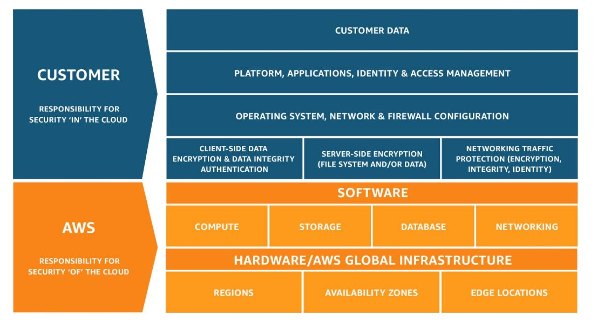

トップページ
作成日：2025/05/10 11:21:33
更新日：2026/02/15 09:10:18
CLF学習
CLF試験概要
CLF試験ガイド(シラバス)
CLF勉強メモ
- Qiita
- CLF勉強メモ
- 用語集_Qiita
- 用語集
- (サイト内ページ)SAA_勉強サイト
CLF合格体験記
AWS設計
AWSクラウドの利点
AWSクラウドを活用することで、企業はコストの削減や業務の効率化を図りつつ、柔軟性や信頼性を最大限に引き出すことが可能です。以下に、AWSクラウドの主な利点を紹介します。
- AWSクラウドコンピューティング6つのメリット
- 固定費が柔軟な変動費へ
- コストの最適化
- キャパシティが予測不要に
- スケールによる大きなコストメリット
- スピードと俊敏性の向上
- わずか数分で世界中にデプロイ
- クラウドコンピューティングの
6 つの利点
- AWSの長所と利点
- AWS の クラウドが選ばれる 10 の理由
- その他の利点(一般的な視点)
- コスト効率
- 規模の経済【スケールメリット】
- 弾力性【スケーラビリティ】
- ビジネスの俊敏性
- グローバル展開の容易さ
- 可用性
- 信頼性
- セキュリティとコンプライアンス
- 運用負担の軽減
- マイクロサービスアーキテクチャ
AWS Well-Architected
フレームワーク
設計原則
クラウドにはワークロードのセキュリティ強化に役立つ多くの原則
- 設計原則
- 強力なアイデンティティ基盤を実装する
- トレーサビリティの維持
- すべての層にセキュリティを適用する
- セキュリティのベストプラクティスの自動化
- 転送中のデータおよび保管中のデータの保護
- 人をデータから遠ざける
- セキュリティイベントの準備
- 設計原則
AWS
グローバルインフラストラクチャ
- AWSグローバルインフラストラクチャの6つの利点
- セキュリティ
- 可用性
- パフォーマンス
- スケーラビリティ
- 柔軟性
- グローバルに提供するサービスの規模
- AWSグローバルインフラストラクチャ
AWS セキュリティ
AWS設計/用語集
俊敏性
俊敏性とは、開発者がこれらのリソースを利用できるようになるまでの時間を数週間から数分に短縮が可能な状態のこと。
信頼性の柱(Design for
Failure)
お客様は利用している AWS サービスの SLA に関わらず、常に Design for
Failure を意識し環境構築や運用について考える必要があります。
AWS
クラウド導入フレームワーク
AWS
クラウド導入フレームワーク (AWS CAF)
AWS
CAFというフレームワークに則ることで、クラウド導入の複雑さを軽減し、ビジネス成果を最大化することができるというものです。
AWS CAF
は、「6つのパースペクティブ」と「7つの機能」が提供されています。
- 6つのパースペクティブ
- ビジネス
- 戦略管理
- ポートフォリオ管理
- イノベーション管理
- 製品管理
- 戦略的パートナーシップ
- データの収益化
- ビジネスインサイト
- データサイエンス
- 人材(人員)
- 文化の進化
- トランスフォーメーションのリーダーシップ
- クラウドフルエンシー
- ワークフォースのトランスフォーメーション
- 変革の促進
- 組織設計
- 組織の連携
- ガバナンス
- プログラムおよびプロジェクト管理
- 利益管理
- リスク管理
- ラウドの財務管理
- アプリケーションポートフォリオ管理
- データガバナンス
- データキュレーション
- プラットフォーム
- プラットフォームアーキテクチャ
- データアーキテクチャ
- プラットフォームエンジニアリング
- データエンジニアリング
- プロビジョニングとオーケストレーション
- モダンアプリケーション開発
- 継続的インテグレーションと継続的デリバリー
- セキュリティ
- セキュリティガバナンス
- セキュリティ保証
- アイデンティティおよび許可管理
- 脅威検出
- インフラストラクチャの保護
- データ保護
- アプリケーションのセキュリティ
- インシデント対応
- オペレーション
- 可観測性
- イベント管理 (AIOps)
- インシデントおよび問題管理
- 変更およびリリース管理
- パフォーマンスおよびキャパシティ管理
- 構成管理
- パッチ管理
- 可用性および継続性管理
- アプリケーション管理
- 7つの機能
- プラットフォームアーキテクチャ（クラウド環境のガイドラインの合意形成）
- データアーキテクチャ（データ分析とアーキテクチャ設計の推進）
- プラットフォームエンジニアリング（高セキュリティで効率的なクラウド環境構築）
- データエンジニアリング（データフローの自動化とオーケストレーション）
- プロビジョニング及びオーケストレーション（クラウド環境の作成と配布の自動化）
- モダンアプリケーション開発（フレームワークに基づくアプリケーション開発）
- CI／CD（アプリケーション開発とサービス展開の迅速化）
- AWSクラウド導入フレームワーク
- AWSクラウド導入フレームワーク
- 第25問 AWS CAF
におけるプラットフォームのパースペクティブ
- AWS
クラウド導入フレームワークの各パースペクティブ
クラウドトランスフォーメーションジャーニー(クラウド導入戦略)
AWSに移行するためのクラウド導入戦略のこと。「4つのフェーズ」で構成される。
AWSデータセンター
責任共有モデル
AWSの責任共有モデルとは、クラウドサービス提供者であるAWSと顧客との間で、セキュリティとコンプライアンスに関する責任を分担する考え方です。
(責任共有モデル)

管理とガバナンス/提供サービス
AWS Managed Service
AWS Managed
Service（AMS）とは、企業がAWSを利用する際にAWSから提供される一連のIT運用サービスのこと。
サポート
サポートプラン
その他
用語集